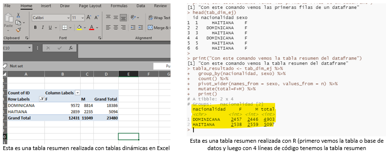

6 Transición desde Excel a R
En el aprendizaje de hacer análisis de datos usualmente se comienza usado hojas de cálculo como Microsoft Excel® para hacer tareas comunes como tablas, gráficos y cálculos estadísticos de forma general.
Si ya estás trabajando con datos de forma regular, es muy probable que también te hayas expuesto a Excel, o lo usas constantemente en tu día a día como parte de las herramientas para procesar, analizar y presentar datos.
En nuestro caso, incluso sabiendo de la existencia de R, creíamos que con Excel podíamos hacerlo todo, como resolver cualquier situación relacionada con los datos, dado que MS Excel tiene muchas funcionalidades y es una herramienta muy completa como hoja de cálculo.
A pesar de lo robusto que puede ser Excel u otra hoja de cálculo, hay límites donde la funcionalidad de R va más allá, empezando por la cantidad de datos que se pueden cargar en un archivo de Excel, el cual tiene un límite de 1,048,576 filas por hoja y 16,384 columnas, y aunque se puede usar Power Query para tener más filas y columnas, no menos cierto es que el archivo se hace muy “pesado” o “lento” para trabajar cuando se usa cierta cantidad de filas y/o columnas. Con R se pueden manejar bases de datos más grandes de manera más rápida, dependiendo de la memoria RAM instalada de la computadora. Te recomendamos que busques en la web cómo aumentar la memoria RAM de tu computadora.
Volviendo a Excel, una hoja de cálculo en general es muy intuitiva y fácil de aprender, solo con abrir una hoja podemos comenzar a escribir agregando datos, escribir funciones para cálculos, hacer gráficos, etc., todo en un entorno guiado a través de los clics del ratón.
En cambio, R, como es un lenguaje de programación, es basado en comandos, sintaxis, donde mayormente todo debe de ser escrito, y realmente, es poco intuitivo al momento de comenzar a usarlo debido a lo complejo que resulta aprender un lenguaje nuevo. Sin embargo, esta forma de proceder a través de texto, también tiene sus ventajas cuando vamos a realizar una tarea, dado que debemos tener definido, de una forma u otra, lo que vamos a hacer y cuáles comandos deben de ser ejecutados para lograr la tarea. De hecho, de forma general, así es que debemos de trabajar, es decir, primero tener un plan en mente, cómo será ejecutado y definir cada paso. La idea es que el cambio de ambiente (pasar de usar más el ratón que escribir) puede ser un poco difícil al principio y sentirnos frustrados, pero con la constante exposición a un nuevo ambiente nos vamos adaptando, y se le hace fácil al cerebro en la medida que vamos practicando cada vez más y más.
En pocas palabras, es estar un poco “abierto” a cosas nuevas y darse la oportunidad de aprender y esforzarse más.
6.1 Tareas que se realizan en Excel (u otras hojas de cálculos) y su equivalente en R
Entrando en el tema de que cosas podemos hacer muy parecidas en R que se hacen con Excel, que son muy propias de lo que hacemos en epidemiología cuando analizamos datos es la exploración, en R podemos al igual que Excel podemos ver las bases de datos en un formato muy parecido a Excel, por ejemplo, podemos usar el comando View() (con V mayúscula) puedes escribir en la consola View(mtcars)[1] y se nos abrirá una ventana una tabla (no editable por cierto) pero nos sirve para ver los datos y filtrar muy parecido a Excel.
Otra tarea muy común que realizamos en Excel son las “pivot tables” o tablas dinámicas, que nos permiten hacer tablas resúmenes de una base de datos con unos cuantos clics de ratón, en R, podemos hacer lo mismo con varios comandos.

A simple vista se pudiera ver que en R es más complicado porque hay que escribir lo que se va a realizar, pero tomando en cuenta que en nuestro trabajo del día a día como investigadores hacemos muchas tablas resúmenes en Excel o tenemos que actualizarlas, y esto realmente toma mucho tiempo, sin embargo, en R solo nos tome tiempo hacer la primera tabla resumen, y posteriormente, tendríamos la ventaja de reusar el código solo cambiando algunos parámetros (como las variables), ahorrándonos mucho tiempo al no tener que repetir la misma tarea una y otra vez.
En Excel también usamos mucho las funciones y fórmulas para hacer cálculos, un ejemplo común es crear grupos de edades a partir de una variable numérica que representa la edad. De una forma u otra, usar funciones o fórmulas en Excel es similar a escribir códigos, y si puedes hacer fórmulas en Excel, entonces significa que ¡ya tienes experiencia codificando! En R, gracias a la disponibilidad de tantos paquetes (como el epikit), tenemos funciones que son específicamente para esto que se requiere menos esfuerzo.
En resumen, hay una vasta documentación disponible sobre cómo adaptarse al uso de R para usuarios de Excel, cuáles son las diferencias entre R y Excel y cómo se complementan. Cuando veamos sobre exportación de datos, veremos un buen ejemplo de esto.
En la web hay mucha documentación acerca de cómo acostumbrarse a realizar análisis de datos con R para usuarios de otros programas; recomendamos que hagas una búsqueda sobre el tema para que vayas adaptándote.
Nuestra mayor recomendación es que comiences a practicar con R haciendo lo que ya sabes hacer con Excel. También puedes fácilmente ver la documentación de una función ecribiendo el signo de interrogración (?) delante de la función que quieres: ?sum() y luego en el panel de ayuda vas a ver cuáles son los argumentos y también un ejemplo. En caso de no entender, busca en internet. ¿Te has dado cuenta de que hacemos mucho enfasís en “Buscar en la web”? Es porque esa es la mayor ventaja que tiene R como lenguaje de programación para análisis de datos, la comunidad de apoyo.
[1] mtcars es una base de datos que trae R internamente como ejemplo sobre carros, para saber más de esta escribe en la consola help(“mtcars”)1
mtcars es una base de datos que trae R internamente como ejemplo sobre carros, para saber más de esta escribe en la consola help(“mtcars”)↩︎